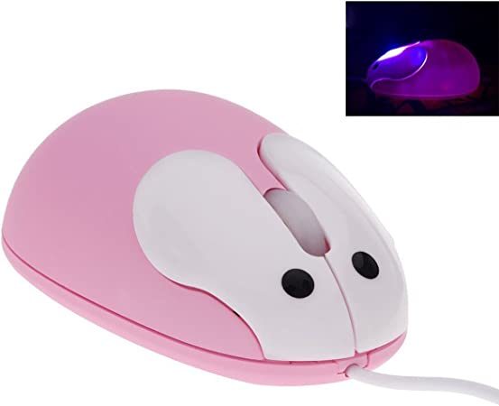

<div class="container">
  <div class="row">
    <div class="col-3 col-s-6" style="padding:16px; float: left">
      <h2>Nieuwste ontwikkelingen computermuis</h2>
  <p>
    De laatste tijd zijn er niet veel nieuwe technologische ontwikkelingen. De muis zit al zo’n beetje aan zijn top van functionaliteit. Het 
    enige wat er nu nog veel verandert is het uiterlijk van de muis en het gemak van het gebruiken. Ze veranderen de muis nu voornamelijk op 
    een manier waardoor het makkelijker en fijner word om de muis te gebruiken. Ze veranderen de vorm en het uiterlijk om te zorgen dat je de 
    muis fijn vind om te gebruiken of dat je de muis er leuk vind uitzien. Je hebt zo bijvoorbeeld muizen in vele kleuren. Er komen ook steeds 
    meer verschillende vormen muizen, muizen die er uitzien als auto’s of als echte muisjes. Dit is natuurlijk niet per se extra functioneel, 
    maar zolang mensen het leuk vinden zullen ze wel goed verkopen. <br><br>
    
  </p>
    </div>
    <div class="col-3 col-s-6" style="padding:16px; float: right">
      <h2>De toekomst</h2>
      <p>
        In de toekomst zal de muis waarschijnlijk nog fijner in gebruik worden en er nog leuker uit zien. De muis zal naar hoogste 
        waarschijnlijkheid ook steeds goedkoper te maken zijn door ontwikkelingen van machines en anderen technologische dingen. De muis heeft 
        waarschijnlijk al vrijwel zijn top bereikt maar zelfs ondanks dat zullen mensen nooit stoppen met de muis proberen te verbeteren dus 
        er is altijd hoop op verbetering.
       </p>
    </div>
  </div>
</div>

</body>
</html>
